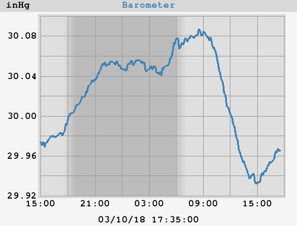

Barometer
24h barometer

Today's min: 29.930 inHg at 14:41:58
Today's max: 30.089 inHg at 08:30:58
7-day barometer
This week's min: 29.611 inHg at 03:20:59 (Wednesday)
This week's max: 30.180 inHg at 08:27:59 (Sunday)
weewx v 3.7